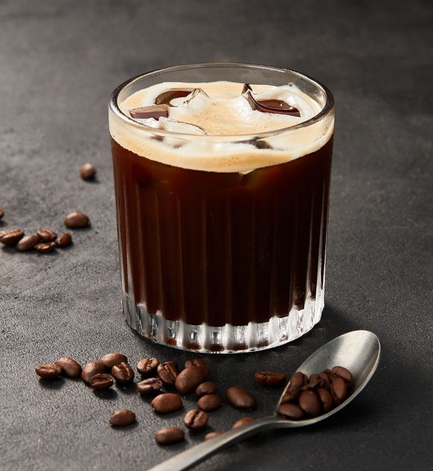

Brewing Methods

Espresso
High-pressure extraction (9 bars) through finely ground coffee produces concentrated shot with rich crema in 25-30 seconds.
25-30s
1oz
195°F
French Press
Full immersion brewing with coarse grind and metal filter allows natural oils to remain, creating full-bodied cup.
4min
8oz
205°F

Pour Over
Manual control of water flow through medium grind allows precise extraction, highlighting coffee's natural flavors.
3min
12oz
195°F

Cold Brew
Slow extraction over 12-24 hours in cold water reduces acidity and bitterness, creating smooth, concentrated coffee.
18hrs
16oz
32°F